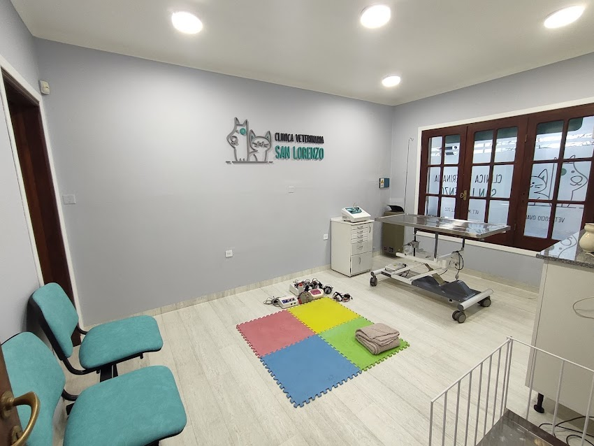

Nuestra Visión
Posicionarse como el centro veterinario de referencia local en innovación médica, gestión digital de pacientes y atención al cliente.

Centro Médico Veterinario y Servicios Integrales de Mascotas
Brindar atención médica veterinaria de alta calidad con un enfoque ético, integral y preventivo, asegurando el bienestar físico de los animales de la clinica.

Posicionarse como el centro veterinario de referencia local en innovación médica, gestión digital de pacientes y atención al cliente.
Peluquería, estética canina y felina.
Guardaría de día.